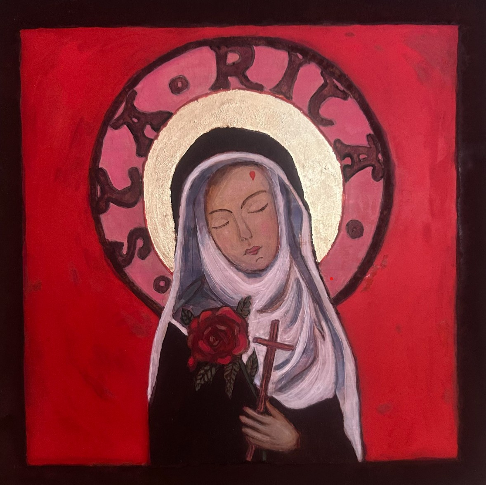

OBRAZY

Tytuł obrazu
Technika, wymiary, rok powstania.
Autorka • Ikony • Obrazy
W mojej domowej pracowni na poddaszu tworzę ikony i obrazy inspirowane duchowością, naturą i pięknem codzienności.

Technika, wymiary, rok powstania.
Technika, wymiary, rok powstania.
Proces twórczy, inspiracje.
Refleksje związane z tworzeniem.
Email: krychlicka.pl@gmail..com
Instagram: @twojprofil